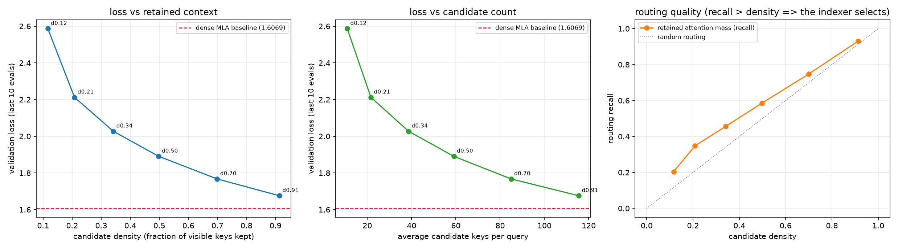
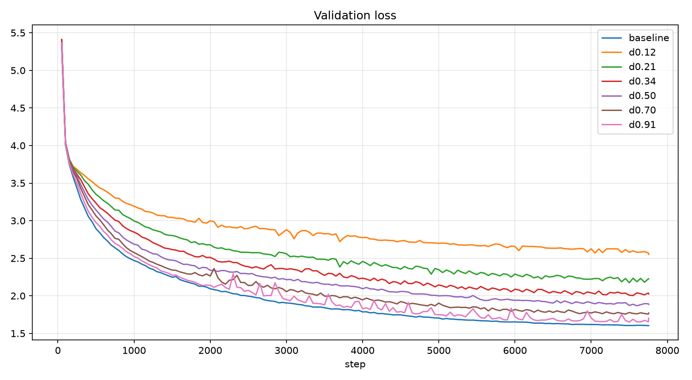
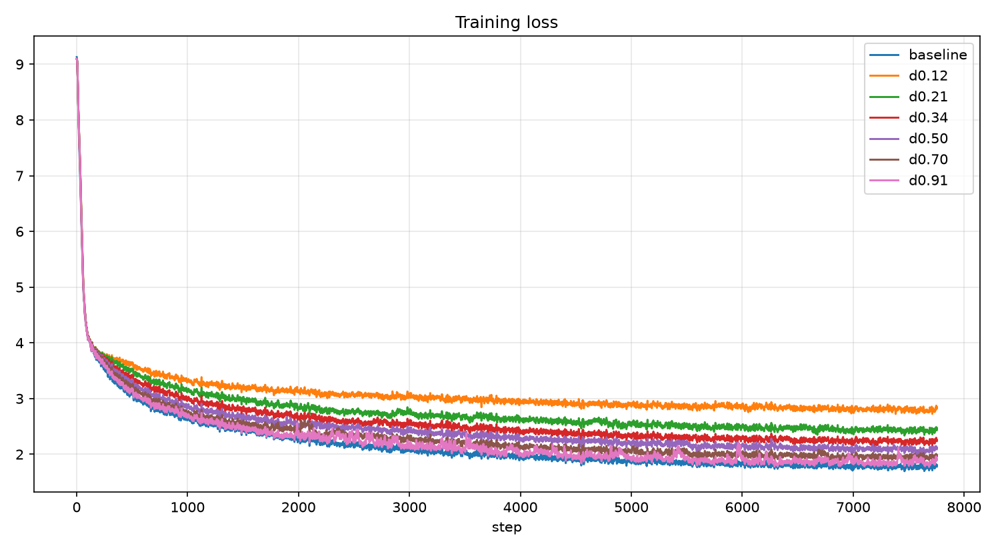
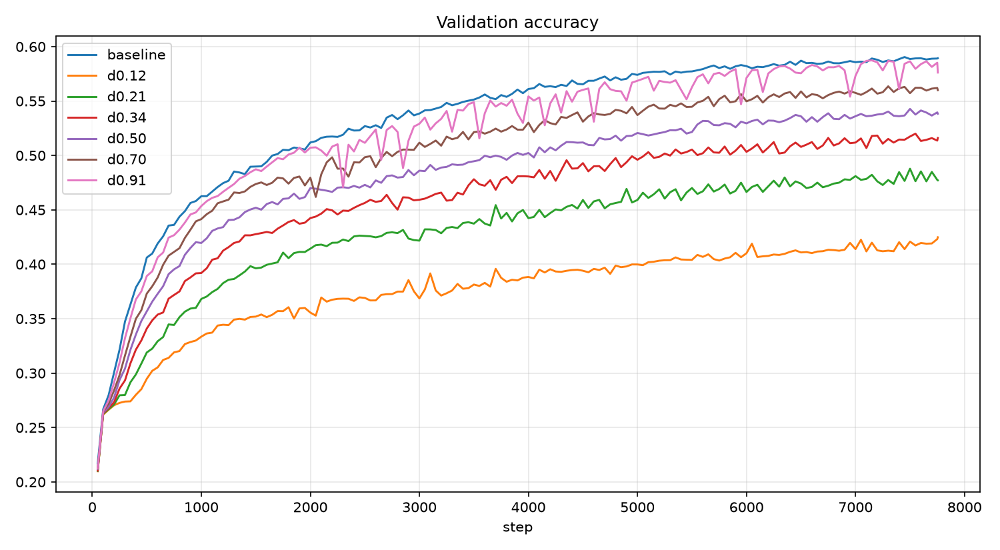
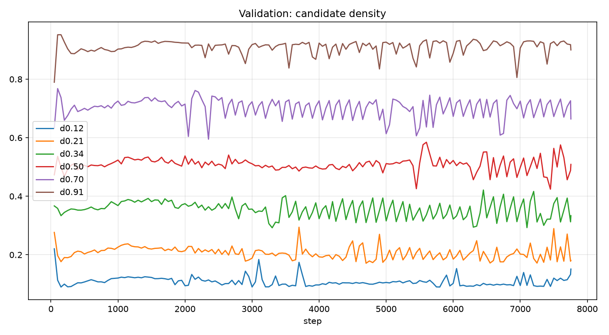
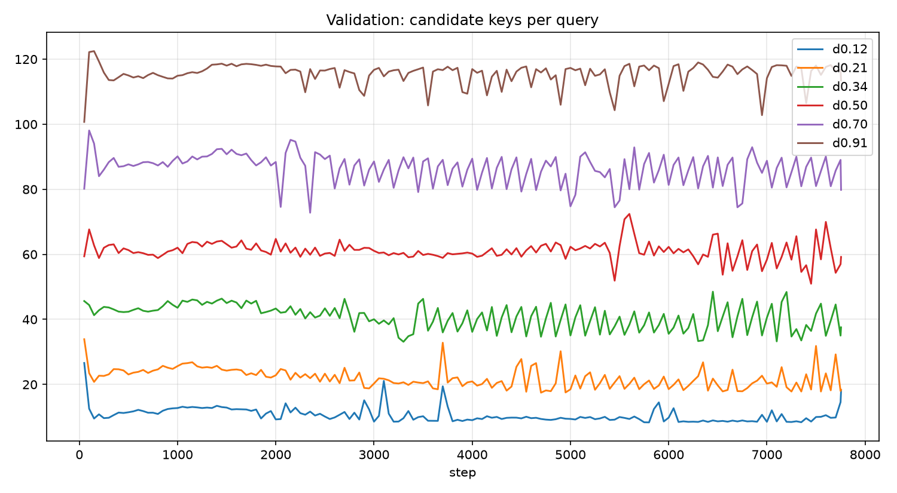
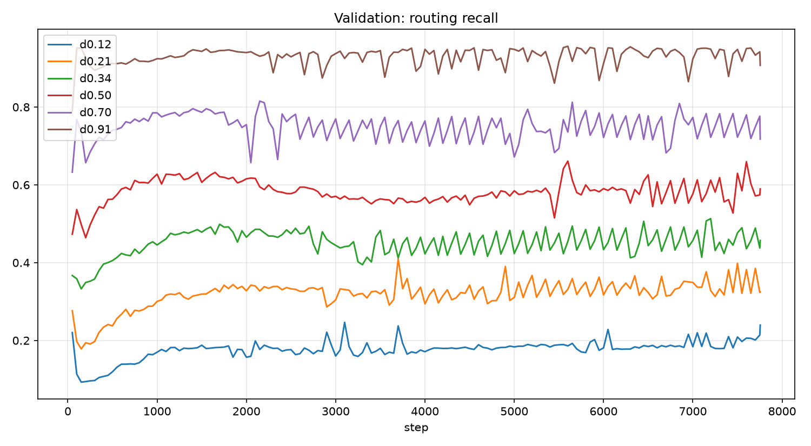

我们提出了 SCA-L Duo，让 SCA-L 的分块索引器去读 MLA 已经压缩好的 KV Cache，并在 4 维空间做 81 格全邻域枚举；在 TinyStories 上跑完一个 epoch 的密度扫描显示，它把上下文砍掉一半后，注意力部分的工作量降到 46%，而验证准确率只掉 5.0 个百分点。
摘要
我们提出了 SCA-L Duo，让 SCA-L 的分块索引器去读 MLA 已经压缩好的 KV Cache，并在 4 维空间做 81 格全邻域枚举；在 TinyStories 上跑完一个 epoch 的密度扫描显示，它把上下文砍掉一半后，注意力部分的工作量降到 46%，而验证准确率只掉 5.0 个百分点。
背景
SCA-L 的端到端实验表现仅接近但仍低于标准注意力，具体原因非常不明。
后来我想明白一件事：MLA 自己就把 KV 压成 64 维的潜在向量再缓存，低维空间早就有了，不用另外造。
那 SCA-L 的变换矩阵该接在哪就很清楚了——接在缓存上，而不是原始 emb 上。解码的时候原始 emb 早就不在显存里了。
介绍
MLA 的缓存里只有 ，所以索引器必须能只靠缓存工作。SCA-L Duo 让 Q 侧的变换矩阵读 ，K 侧的读 ：
再把编码压进有界盒子切块：
查询保留所有满足 且合法的 K。latent_dim=4 时这是 个格子，也就是全邻域枚举，不再只走面相邻。
注意力分数仍然由 MLA 算，索引器一个分都不打，它只决定哪些 K 可见。
密度不能靠损失项去要。我们发现每一个损失项都偏好更稠密的划分，所以密度是个停在 1.0 的吸引子，用梯度推不动。
于是把密度做成约束，对有效格子宽度跑一个积分控制器：
是实测密度的 EMA， 是设定值，。 是 buffer，收敛后跟着 checkpoint 走，推理时就是一个固定划分。
缺点
这是稠密掩码，省的是“该算多少”，不是“实际跑了多久”——真时间收益得自己写 kernel，我还没写。
代价和丢弃比例基本成正比，没有拐点，所以不存在白拿的稀疏。
索引器只学“把注意力大的 K 对拉进相邻格”，它不参与打分，所以它的上限取决于潜在空间的几何，而不是它自己有多聪明。
为了让主干和裸 MLA 严格可比，我把索引器的输入 detach 掉了，辅助目标碰不到 ，这堵掉了一条可能有效的路。
初步实验
数据换成了 TinyStories + byte-level BPE（vocab 8192），跑满一个 epoch 共 7755 步。block 256、batch 32，emb 512、6 层、8 头，MLA latent 64、索引器 latent 4、chunk_size 0.5。
基线是同一个 MLA，只是不接索引器。在 AutoDL 上租了一张 4080 SUPER 32GB。
密度设定值从 0.10 扫到 0.90，每个点都跑满整个 epoch，取最后 10 次验证的均值：
| 密度 | 平均候选 K | 计算量 | 验证 loss | 验证准确率 |
|---|---|---|---|---|
| 0.12 | 10.9 | 8% | 2.5866 | 41.9% |
| 0.21 | 21.6 | 17% | 2.2122 | 48.0% |
| 0.34 | 38.7 | 30% | 2.0271 | 51.5% |
| 0.50 | 59.1 | 46% | 1.8906 | 53.9% |
| 0.70 | 85.0 | 66% | 1.7673 | 56.1% |
| 0.91 | 115.6 | 90% | 1.6756 | 58.1% |
| 1.00 | 128.5 | 100% | 1.6069 | 58.9% |
裸 MLA 平均每个 Q 要看 128.5 个 K（ 的均值）。密度是逐行比例再对位置平均，短前缀的行天然接近 1，所以它比“平均候选 K / 128.5”偏高一点，别拿它当成本。




这四张图说的是一件事：SCA-L Duo 在每个密度上都落后 MLA，但落后多少要看你怎么量。
保留 50% 的时候，验证 loss 从 1.6069 涨到 1.8906，单看这个数像涨了三分之一（困惑度 +33%）；准确率却只从 58.9% 掉到 53.9%，5.0 个百分点。
我猜是因为 loss 盯着整条分布的尾部，而 top-1 只要求正确答案还排在第一——概率质量挪走了，排序没怎么动。
所以我认为最划算的一档就是保留 50%：平均每个 Q 看 59 个 K，注意力部分的计算量降到 46%，换 5 个准确率点。再往下压才开始贵：34% 掉 7.4 点，12% 掉 17 点。
曲线本身单调、没有拐点，“白拿”的稀疏当然不存在；但从 70% 压到 50% 这一段，用一半上下文换回 5 个点，我觉得是能用的。
密度控制器本身是有效的：


六个点的密度都停在设定值附近，4000 步之后均值是 0.105 / 0.201 / 0.348 / 0.507 / 0.697 / 0.911，设定值 0.10 / 0.20 / 0.35 / 0.50 / 0.70 / 0.90；没有像早期那样塌到 0.03，也没有弹回 1.0。
但逐次验证之间的波动还有均值的 3%~12%（越稀疏抖得越厉害），中间有三个点的 lag-1 自相关是负的，说明周期 2 的残留没清干净，我暂时没管它。
Routing Recall
这是我自己搞的一个指标，注意，我并没有让他参与梯度计算，这只是一个指标。
一个 Q 的稠密注意力是一组和为 1 的权重，把候选集合里那些 K 的权重加起来，就得到这个 Q 的 recall——掩码筛完之后还剩多少注意力质量；对所有位置取平均，就是表里的 recall。
密度是另一回事：保留的 K 占可见 K 的比例。随机留同样多的 K，期望上也会捞回同样比例的注意力质量，所以随机路由下 recall 恰好等于密度，两者的比值 lift 恒等于 1：
但 lift 有个毛病：密度 0.91 时本来就留了 91% 的 K，哪怕纯随机也几乎全捞回来，lift 的上限 只有 1.09；密度 0.12 时上限是 8.60。上限跟着密度走，lift 就没法横着比。
把上限除掉，剩下的意思是“随机会漏掉的注意力质量里，实际捞回了多少”，记作净找回：

虚线是随机路由，六个点全在它上面。
| 密度 | recall | lift | lift 上限 | 净找回 |
|---|---|---|---|---|
| 0.12 | 0.204 | 1.76 | 8.60 | 10.0% |
| 0.21 | 0.348 | 1.67 | 4.80 | 17.6% |
| 0.34 | 0.457 | 1.34 | 2.93 | 17.5% |
| 0.50 | 0.586 | 1.18 | 2.01 | 17.5% |
| 0.70 | 0.747 | 1.07 | 1.43 | 16.0% |
| 0.91 | 0.931 | 1.02 | 1.09 | 20.4% |
lift 一列全部大于 1，索引器确实在挑。
但净找回那一列基本是平的，落在 16%~20%，只有最稀疏的 0.12 掉到 10%。也就是说它在每个预算下都稳定地捞回随机会漏掉的那部分的六分之一到五分之一。
“预算越紧挑得越准”是 lift 的假象——变的只是还剩多少可以捞，不是它捞的水平。上面那条代价曲线单调也一样，不是索引器在高密度下偷懒，而是保留得越少，能捞回来的绝对量就越少。
未来规划
我想先写个真 kernel，把“省了计算”从掩码变成时间——先做保留 50% 那一档，它的性价比最好。如果时间真的省下来了，再去试更大的 sca_latent_dim，看 81 格是不是太粗了。
还有一条我暂时不打算走：让辅助目标也碰 ，代价是失去和裸 MLA 的严格可比性。
结尾
附代码可复现。TinyStories 语料和 BPE 分词器太大没有打包，tools/prepare_data.sh 和 common/build_data.py 里有下载和训练的脚本。
2026/10/2更新：全文重写。原来的方案是“用SCA-L当MLA的Indexer”，现在索引器改读 KV Cache 里的 而不是原始 emb，并补上了一个完整 epoch 的密度扫描。